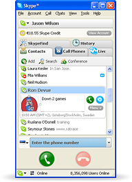

–öSkype –¥–ª—è —Ä–∞–±–æ—á–µ–≥–æ —Å—Ç–æ–ª–∞ Windows
–ü–æ–ª—É—á–∏—Ç–µ –Ω–æ–≤–µ–π—à—É—é –≤–µ—Ä—Å–∏—é –∑–¥–µ—Å—å.
KSkype 1.43.0 for Windows
You seem to be running an older version of Skype.
We recommend you to upgrade to the latest version.
Make calls from your computer - free to other people on Skype, cheap to phones and mobiles across the world. And the sound quality is great, too - keep it running all day, and it’s like you’re in the same room as the person on the other end.
C –ø–æ–º–æ—â—å—é –∫–ª–∏–µ–Ω—Ç–∞ KSkype –∏ —Å–µ—Ç–∏ Skype –º–æ–∂–Ω–æ —Å–¥–µ–ª–∞—Ç—å —Å—Ç–æ–ª—å–∫–æ –≤—Å–µ–≥–æ –ø–æ–ª–µ–∑–Ω–æ–≥–æ:
- –ë–µ—Å–ø–ª–∞—Ç–Ω—ã–µ –∑–≤–æ–Ω–∫–∏ –º–µ–∂–¥—É –∞–±–æ–Ω–µ–Ω—Ç–∞–º–∏ —Å–µ—Ç–∏ –°–∫–∞–π–ø –ø–æ –≤—Å–µ–º—É –º–∏—Ä—É!
- –í–∏–¥–µ–æ—Å–≤—è–∑—å —Å –ø–æ–ª—å–∑–æ–≤–∞—Ç–µ–ª—è–º–∏ Skype –≤ HD —Ä–∞–∑—Ä–µ—à–µ–Ω–∏–∏.
- –ó–≤–æ–Ω–∏—Ç–µ –Ω–∞ —Ç–µ–ª–µ—Ñ–æ–Ω—ã –∏ –º–æ–±–∏–ª—å–Ω—ã–µ –ø–æ –¥–æ–≤–æ–ª—å–Ω–æ –¥–µ—à–µ–≤—ã–º —Ç–∞—Ä–∏—Ñ–∞–º –∑–∞ –º–∏–Ω—É—Ç—É.
- –ú–≥–Ω–æ–≤–µ–Ω–Ω–æ–µ —Å–æ–æ–±—â–µ–Ω–∏–µ –∫–æ–≥–¥–∞ –Ω–µ —Å–∞–º–æ–µ –ø–æ–¥—Ö–æ–¥—è—â–µ–µ –≤—Ä–µ–º—è –¥–ª—è —Ä–∞–∑–≥–æ–≤–æ—Ä–∞.
- –ü–µ—Ä–µ–∞–¥—Ä–µ—Å—É–π—Ç–µ –≤–∞—à–∏ –∑–≤–æ–Ω–∫–∏ –∏ –ø–æ–ª—É—á–∞–π—Ç–µ —Ç–µ–∫—Å—Ç–æ–≤—ã–µ —Å–æ–æ–±—â–µ–Ω–∏—è –∫–æ–≥–¥–∞ –≤–∞—Å –Ω–µ—Ç –≤ —Å–µ—Ç–∏.
–ù–æ–≤–æ–≤–≤–µ–¥–µ–Ω–∏—è –≤ —ç—Ç–æ–π –≤–µ—Ä—Å–∏–∏:

–ß–∏—Ç–∞–π—Ç–µ –±–æ–ª—å—à–µ –≤ –±–ª–æ–≥–µ KSkype!
–ú—ã –æ–±—ä–µ–¥–∏–Ω–∏–ª–∏ –±–ª–æ–≥–∏ –Ω–∞—à–∏—Ö —Å–µ—Ä–≤–∏—Å–æ–≤ –≤ –µ–¥–∏–Ω—ã–π @–ë–ª–æ–≥ –¥–ª—è –≤–∞—à–µ–≥–æ —É–¥–æ–±—Å—Ç–≤–∞
KSkype –Ω–µ —Å–≤—è–∑–∞–Ω –Ω–µ —Å–æ Skype Limited, –Ω–µ —Å –∫–æ—Ä–ø–æ—Ä–∞—Ü–∏–µ–π Microsoft
–ö–ª–∏–µ–Ω—Ç –ø—Ä–∏–Ω–∞–¥–ª–µ–∂–∏—Ç @limpe Technologies. –ò—Å–ø–æ–ª—å–∑—É—è –µ–≥–æ, –≤—ã –ø–æ–Ω–∏–º–∞–µ—Ç–µ –∏ –ø—Ä–∏–Ω–∏–º–∞–µ—Ç–µ —Ç–æ, —á—Ç–æ –∫–ª–∏–µ–Ω—Ç —Å–æ–∑–¥–∞–Ω —ç–Ω—Ç—É–∑–∏–∞—Å—Ç–∞–º–∏ –∏ –Ω–∏–∫–∞–∫ –Ω–µ –æ–¥–æ–±—Ä–µ–Ω Skype Limited –∏ –ú–∞–π–∫—Ä–æ—Å–æ—Ñ—Ç
–ö–∞–∫ —Å–æ–æ–±—â–∏—Ç—å –æ–± –æ—à–∏–±–∫–µ –≤ —Ä–∞–±–æ—Ç–µ –ø—Ä–æ–≥—Ä–∞–º–º—ã
- –£–±–µ–¥–∏—Ç–µ—Å—å, —á—Ç–æ –≤—ã –∏—Å–ø–æ–ª—å–∑—É–µ—Ç–µ –ø–æ—Å–ª–µ–¥–Ω—é—é –≤–µ—Ä—Å–∏—é KSkype. –ú—ã –æ—Ç–∫–∞–∑—ã–≤–∞–µ–º –≤ –ø–æ–¥–¥–µ—Ä–∂–∫–µ –ø–æ —Ä–∞–±–æ—Ç–µ —Å—Ç–∞—Ä—ã—Ö –≤–µ—Ä—Å–∏–π –ø—Ä–æ–≥—Ä–∞–º–º.
- –°–æ–±–µ—Ä–∏—Ç–µ –∫–∞–∫ –º–æ–∂–Ω–æ –±–æ–ª—å—à–µ —Å–≤–∏–¥–µ—Ç–µ–ª—å—Å—Ç–≤ –æ–± –æ—à–∏–±–∫–µ, –ª–æ–≥–∏ –≤ %AppData%\KSkype, —Å–∫—Ä–∏–Ω—à–æ—Ç—ã –∏ —Å–æ–æ–±—â–∏—Ç–µ –Ω–∞–º –ø–æ —ç–ª–µ–∫—Ç—Ä–æ–Ω–Ω–æ–π –ø–æ—á—Ç–µ.
- –û–∂–∏–¥–∞–π—Ç–µ –æ—Ç–≤–µ—Ç–∞. –ú—ã –∑–∞–ø–∏—à–µ–º –≤–∞—à —Ä–µ–ø–æ—Ä—Ç —Å–µ–±–µ –≤ –∑–∞–º–µ—Ç–∫–∏ –∏ —É—á—Ç–µ–º –ø—Ä–∏ –≤—ã–ø—É—Å–∫–µ –Ω–æ–≤–æ–π –≤–µ—Ä—Å–∏–∏
Want some more detail?
There’s lots more to know about High Quality Video. Read about it here.
- –°–∏—Å—Ç–µ–º–Ω—ã–µ —Ç—Ä–µ–±–æ–≤–∞–Ω–∏—è
- ПК под управлением операционной системы Windows® 7, 8, 8.1, 10 или Windows 11 (поддерживаются как 32-, так и 64-разрядные ОС, поддерживается Windows Vista и XP при фиксах напр. Extended Kernel).
- Соединение с Интернетом (в идеале – широкополосное соединение, GPRS не поддерживается для голосовой связи).
- –î–ª—è –≥—Ä—É–ø–ø–æ–≤–æ–π –≤–∏–¥–µ–æ—Å–≤—è–∑–∏ –≤—Å–µ–º —É—á–∞—Å—Ç–Ω–∏–∫–∞–º –∑–≤–æ–Ω–∫–∞ –ø–æ—Ç—Ä–µ–±—É–µ—Ç—Å—è –≤–µ—Ä—Å–∏—è Skype 1.41.0 –∏–ª–∏ –≤—ã—à–µ –¥–ª—è Windows –∏–ª–∏ Macintosh, –∞ —Ç–∞–∫–∂–µ –≤–µ–±-–∫–∞–º–µ—Ä–∞. –ú–∞–∫—Å–∏–º–∞–ª—å–Ω–æ –≤—ã—Å–æ–∫–æ–µ –∫–∞—á–µ—Å—Ç–≤–æ –≤–∏–¥–µ–æ–∏–∑–æ–±—Ä–∞–∂–µ–Ω–∏—è –¥–æ—Å—Ç–∏–≥–∞–µ—Ç—Å—è –ø—Ä–∏ –∏—Å–ø–æ–ª—å–∑–æ–≤–∞–Ω–∏–∏ —Å–∫–æ—Ä–æ—Å—Ç–Ω–æ–≥–æ —à–∏—Ä–æ–∫–æ–ø–æ–ª–æ—Å–Ω–æ–≥–æ –ø–æ–¥–∫–ª—é—á–µ–Ω–∏—è –∫ –ò–Ω—Ç–µ—Ä–Ω–µ—Ç—É (–Ω–µ –º–µ–Ω–µ–µ 4 –ú–±–∏—Ç/—Å –Ω–∞ –ø—Ä–∏–µ–º –∏ 512 –∫–±–∏—Ç/—Å –Ω–∞ –æ—Ç–¥–∞—á—É) –∏ –∫–æ–º–ø—å—é—Ç–µ—Ä–∞ —Å –ø—Ä–æ—Ü–µ—Å—Å–æ—Ä–æ–º –Ω–µ –Ω–∏–∂–µ Core 2 Duo 1,8 –ì–ì—Ü. –ú–∏–Ω–∏–º–∞–ª—å–Ω—ã–µ —Ç–µ—Ö–Ω–∏—á–µ—Å–∫–∏–µ —Ç—Ä–µ–±–æ–≤–∞–Ω–∏—è: —Å–∫–æ—Ä–æ—Å—Ç–Ω–æ–µ —à–∏—Ä–æ–∫–æ–ø–æ–ª–æ—Å–Ω–æ–µ —Å–æ–µ–¥–∏–Ω–µ–Ω–∏–µ (512 –∫–±–∏—Ç/—Å –Ω–∞ –ø—Ä–∏–µ–º –∏ 128 –∫–±–∏—Ç/—Å –Ω–∞ –æ—Ç–¥–∞—á—É) –∏ –ø—Ä–æ—Ü–µ—Å—Å–æ—Ä —Å —Ç–∞–∫—Ç–æ–≤–æ–π —á–∞—Å—Ç–æ—Ç–æ–π –Ω–µ –Ω–∏–∂–µ 1 –ì–ì—Ü
- –î–ª—è –≥–æ–ª–æ—Å–æ–≤–æ–π —Å–≤—è–∑–∏ —Ä–µ–∫–æ–º–µ–Ω–¥—É–µ—Ç—Å—è –∏—Å–ø–æ–ª—å–∑–æ–≤–∞—Ç—å —à–∏—Ä–æ–∫–æ–ø–æ–ª–æ—Å–Ω–æ–µ —Å–æ–µ–¥–∏–Ω–µ–Ω–∏–µ —Å–æ —Å–∫–æ—Ä–æ—Å—Ç—å—é –Ω–∞ –ø—Ä–∏–µ–º –∏ –æ—Ç–¥–∞—á—É 100 –∫–±–∏—Ç/—Å.